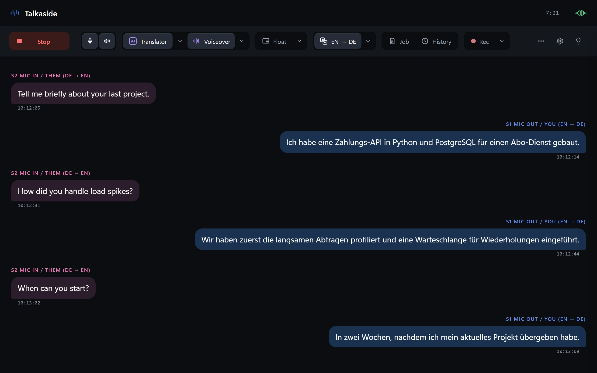
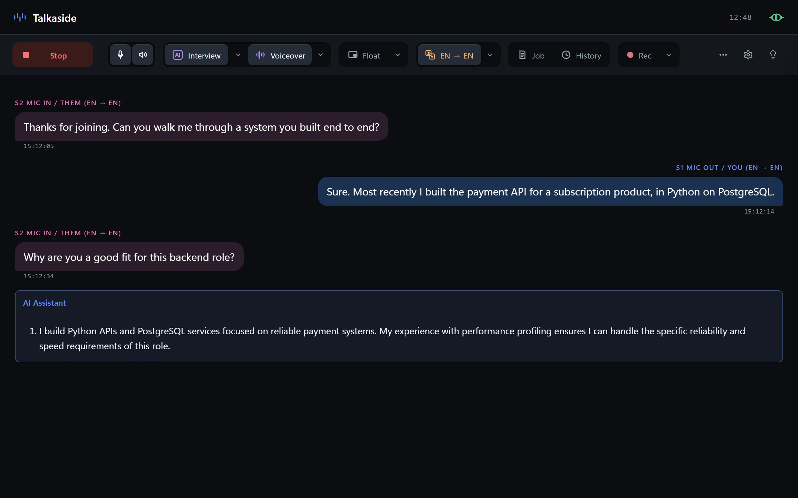
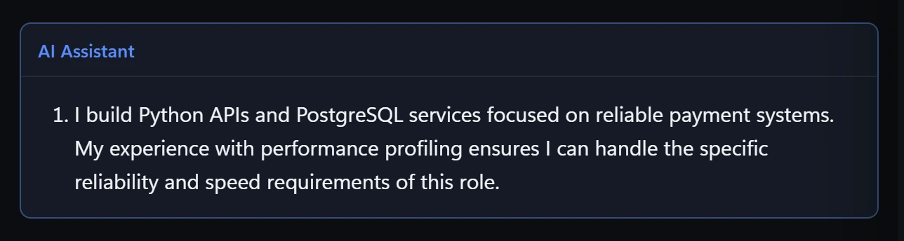
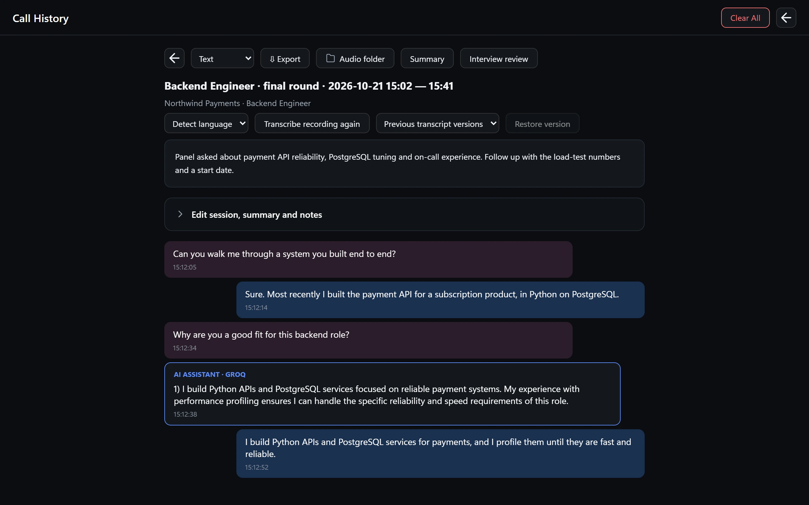

양쪽 대화를 말하는 즉시 번역
통화 양쪽의 말을 실시간으로 받아 적고 양방향으로 번역합니다. 상대의 말을 이해하고 편한 언어로 답하세요.

Windows에서 Talkaside가 답변을 제안하고 통화를 실시간으로 번역합니다.

Talkaside는 Windows용 AI 면접 도우미이자 실시간 통화 번역 앱입니다. 통화를 들으며 대화를 받아 적고, 들린 질문에 대한 답변 제안을 보여 줍니다.
Zoom, Microsoft Teams, Google Meet 통화에서 함께 쓸 수 있으며, 이력서와 채용 공고를 바탕으로 대화 양쪽의 말을 선택한 언어로 실시간 번역합니다.
방금 들은 질문에 이력서와 채용 공고를 바탕으로 한 답변 제안을 받으세요.
사용하지 않는 언어로 말하는 고객이나 동료의 말을 이해하고, 내 언어로 답하세요.
실제 대화로 외국어를 연습하고, 통화가 끝난 뒤 기록을 다시 읽어 보세요.
Talkaside가 듣고 제안하고 번역하는 동안 대화에 집중하세요.
통화 양쪽의 말을 실시간으로 받아 적고 양방향으로 번역합니다. 상대의 말을 이해하고 편한 언어로 답하세요.

AI 도우미 두 개가 실시간 기록, 이력서, 채용 공고, Q&A를 읽습니다. 답은 직접 말하세요.

10초에서 60초 음성을 녹음하면 번역 음성용 로컬 음성 프로필을 만듭니다. NVIDIA GPU가 필요합니다.
답변을 띄우는 작은 최상위 창입니다. 지원되는 화면 공유에서 제외되도록 설계됐지만 캡처 도구마다 다르니 직접 확인하세요.
대화 기록과 세션은 PC에 저장됩니다. 통화 녹음은 선택 사항이며 켜기 전까지 꺼져 있습니다.
음성과 텍스트는 설정한 음성 및 AI 제공업체에만 전송됩니다. 그곳에서 내용을 볼 수 있으니 신중히 고르세요.
talkaside.com에서 내려받아 Windows에서 설치 프로그램을 실행하세요.
언어와 사용할 음성 및 AI 제공업체를 고르세요.
Start를 누르면 말할 때마다 기록, 제안, 번역이 나타납니다.
모든 세션은 대화 기록, AI 답변, 편집하고 내보낼 수 있는 요약과 함께 저장됩니다.

Windows 10 및 11, 64비트 버전만 지원합니다.
네. 5일 동안 쓸 수 있고, 기기당 한 번만 활성화됩니다. 클라우드 AI와 음성 제공업체는 별도로 청구합니다.
설정한 음성 및 AI 제공업체에만 전송됩니다. 음성 경로에 Talkaside 서버는 없습니다.
설치 프로그램에 코드 서명이 없어서 처음 실행할 때 SmartScreen이 경고할 수 있습니다.
대화 기록과 세션은 PC에 저장됩니다. 녹음은 선택 사항이며 켜기 전까지 꺼져 있습니다.